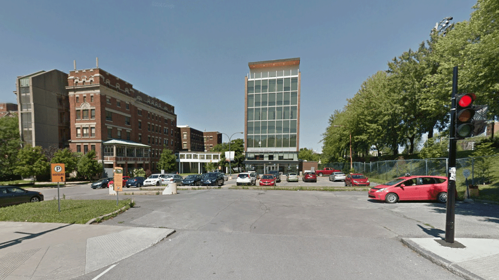
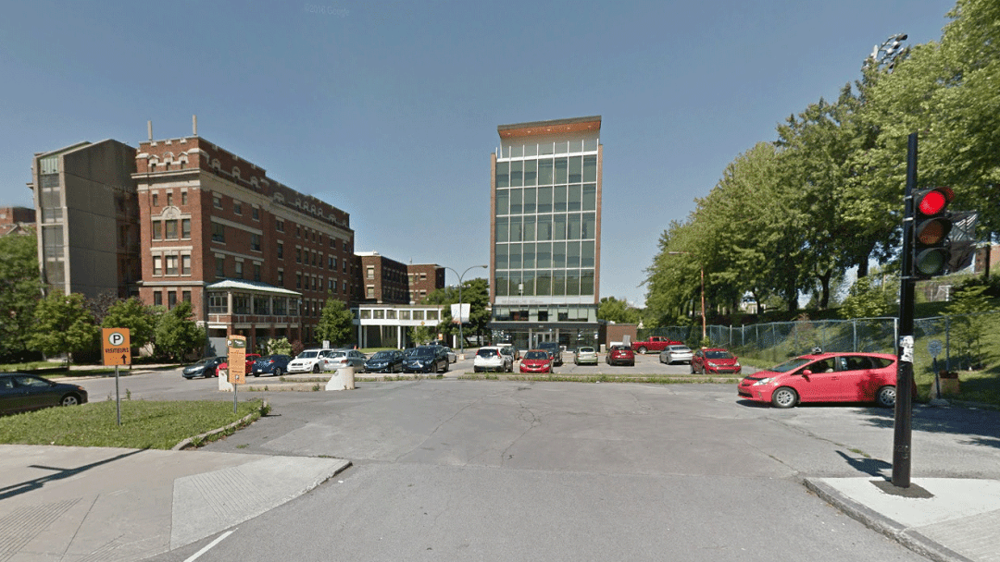

Week 1 will introduce participants to a computational reproducibility toolkit, as well as a basic grounding in supervised and unsupervised machine learning methods. Short lectures and hands-on tutorials throughout the five days will provide participants with familiarity applying these methods to real data. Dr Félix Antoine-Fortin (Calcul Québec) and Dr Manjari Narayan (Stanford University) will be residents during week 1. As a participant, at the end of Week 1 you should be able to answer questions such as:
A short quizz will be organized at the end of week 1, to check that participants have integrated the key points of the week. This quizz will count for 10% of the final note.
Week 2 will feature “pitch sessions”, where instructors give a short overview of skills or resources that can be incorporated into projects. Week 2 will be mostly focused on defining and piloting the project. As a participant, you will need to decide:
Each project will go through one round of written submission and feedback, and revised by the end of week 2. This project description will count for 10% of the final note.
 


During week 3, participants will work on their project. Dr Joana Pereira (Karolinska Institute) will be resident for the week. The content of a typical day will include:
By the end of week 3, participants will prepare a short video summarizing their project. This video will count for 10% of the final note.
Week 4 will concentrate on finalizing project results and producing deliverables. Dr Pamela Douglas (University of California, Los Angeles), will be the resident for the week. Participants will have to produce a written deliverable for their project, such as a short BrainHack proceeding paper or a blog post. These deliverables will have to be submitted by September 6th (one week after the end of the school), and will count for 30% of the final grade. During week 4, participants will also make a short oral presentation of their project, which will count for 28% of the final grade. Finally, there will be a participation grade for the full 4 weeks, which will count for 12% of the final grade.